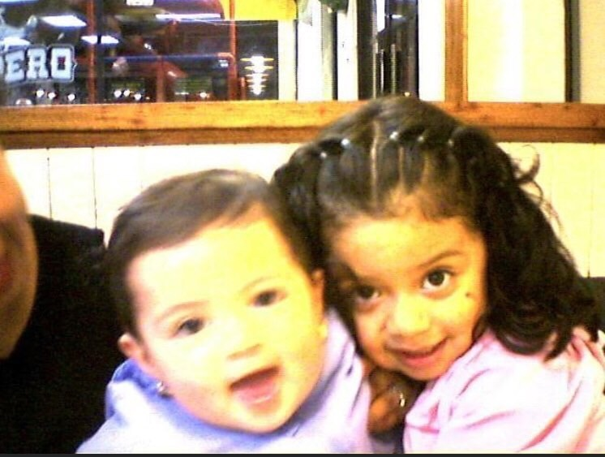
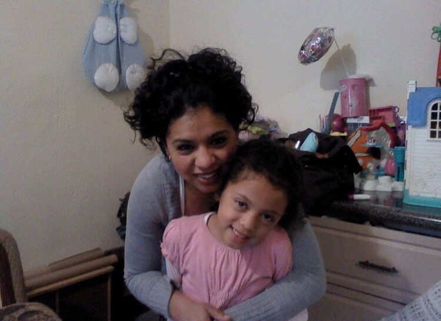
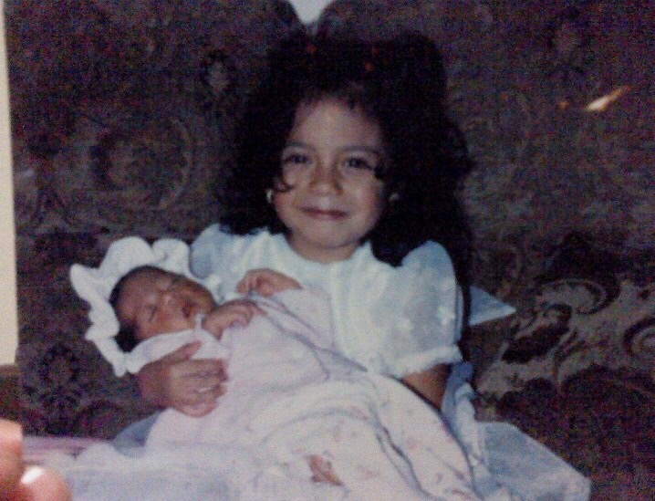
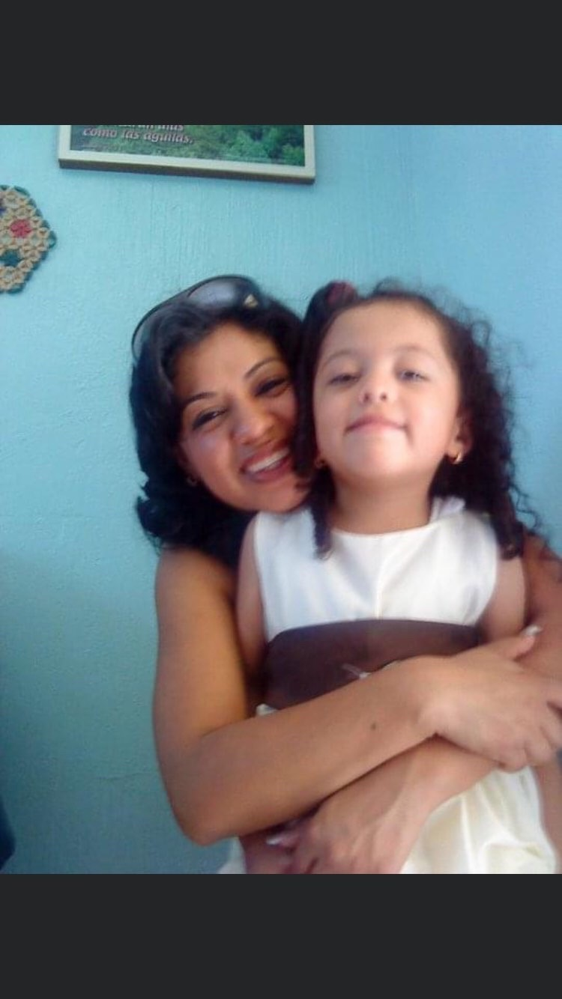
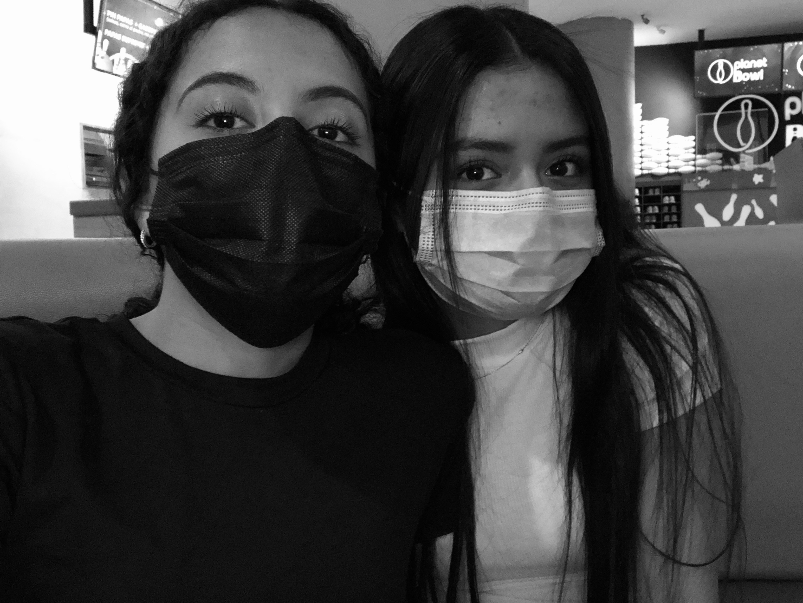
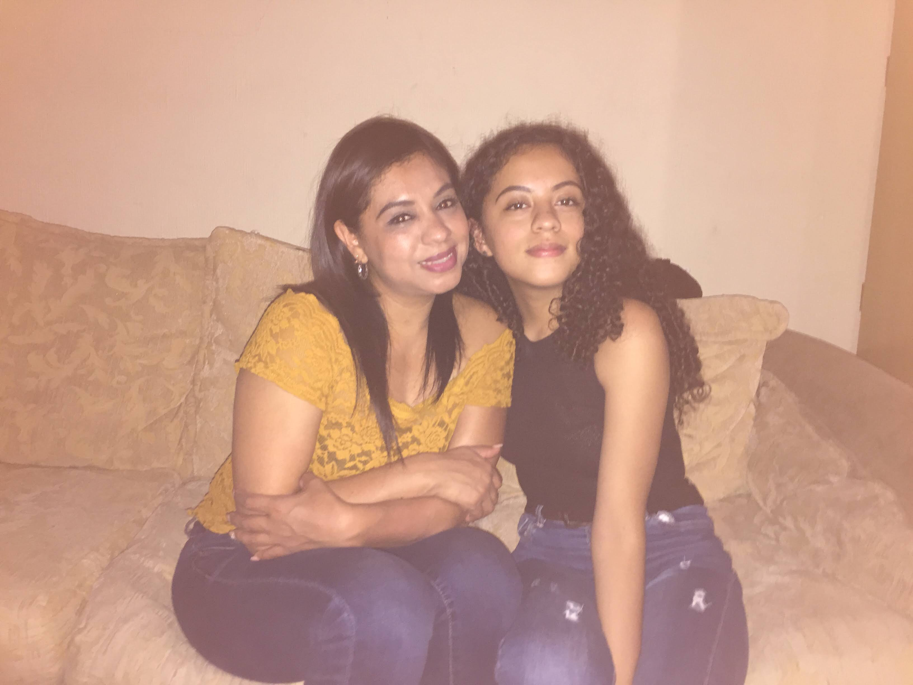

MI HISTORIA
Mi vida desde que nací....
Guiselle de bebé
Nací el 3 de abril de 2005 a las 7 a.m en un Hospital Privado, nací a los 7 meses y pues Gracias a Dios nací bien, sin ningún problema excepto la vista y la intolerancia a la lactosa. Desde que nací mis padres ya no estaban juntos, sin embargo seguían viviendo juntos.Empecé a cdar mis primeros pasos al año y siempre fui una bebé tranquila. Me gustaba mucho comer bananos, y comer salchichas, fui muy pegada a mi mamá ya que me tocó ver como mi mamá estaba sola, sin ayuda de mi padre y por ello no me gustaba dejarla sola , pero eso no significa que no le tenga aprecio a mi padre. No practico ninguna religión porque mi madre me dejó elegir y decidir sola, y pues no practico ninguna religión solamente soy creyente de Dios . Y así fui creciendo, como a los 5 años me enfermé bastante grave por un medicamento al que soy alergica, me causó una combulsión bastante grave, y pues mi madre me llevó de emergencia al hospital, puedo decir que recuerdo perfectamente como me apretaban mis tobillos y muñecas para poder encontrar mis venas, Gracias a Dios pues todo salió bien. Seguí creciendo, entré al colegio a los 4 años y pues no me costó nada acostumbrarme, aunque aún lloraba por mi mamá. A los 10 u 11 años me detectaron miopía y astigmatismo y ahora tengo que usar lentes toda la vida,esa es otra enfermedad que me dejó el hecho de que nací a los 7 meses. Cuando entré a Primaria me desenvolví más e hice varios amigos, también tuve 2 mascotas, un perrito rescatdo de la calle, y una perrita que le regalaron a mi hermana.Siempre fui y he sido bastante aplicada en el estudio, gracias a mi mami que siempre me enseñó que el hecho de estudiar es una oportunidad y un privilegio que se debe aprovechar. Desde que era pequeña mi madre me vestía así bien bonito, con vestidos y faldas, también me enseñó que debo bañarme todos los días y siento que eso tiene mucho que ver con el hecho de me llame la atención la moda ahora . Fui creciendo y pues entré a Básicos, y fue cuando mi vida cambió, pues el ambiente en el colegio obviamente ya no era el mismo, empecé a salir más, a conocer mucha más gente, me pude dar cuenta que no toda la gente es buena con uno, y conocí a mi mejor amiga. De segundo a tercero básico me empecé a desviar un poco del camino del bien , empecé a dejar por un lado el estudio y empecé a salir más, pero sin embargo jamás abandoné por completo la responsabilidad de estudiar y entregar tareas, en esos dos años aprendí , a valorar a mucha gente y también algo que me marcó fue que la vida solo es una y hay que aprovecharla. Durante ese tiempo a mi abuela paterna le detectaron cancer de mama, fue algo difícil para mi y para mi familia pero Gracias a Dios logró salir de su enfermedad y la venció.Y pues ahora me ecuentro en 4to Bachillerato en Computación con 16 años, y pues Gracias a Dios tengo salud, a mi familia, hasta el momento he aprendido muchisímas cosas tanto buenas como malas, pero soy creyente de que todo pasa por algo y pues nadie es perfecto y de los errores se aprende . Tengo una madre maravillosa, no la cambiaría por nada ni nadie, y una hermana de 19 años que realmente no sé que haría sin ella, mi padre pues no vive con nosotras pero nunca se ha olvidado de que nos tiene y debe pagar nuestro gasto. Realmente no me arrepiento de nada en mi vida, pienso que cada cosa tiene un propósito en mi vida y por algo llegó.
UNAS CUANTAS FOTOS DE CUANDO ERA PEQUEÑA




